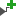

[Board] ウィンドウには、現在のターゲット ボードで定義されたコンポーネントすべてがリストされます。コンポーネントは、現在のブロック デザインにドラッグ アンド ドロップできます。また、コンポーネントを選択すると、現在デザインで接続されているインターフェイスを確認することもできます。
[Board] ウィンドウでコンポーネントのリストを表示する際に [Show Connected Board Interfaces Only] コマンド () を使用すると、現在接続されているコンポーネントのみを表示できます。接続されていないコンポーネントを選択して [Connect Board Component] コマンド () を使用すると、そのコンポーネント IP を現在のブロック デザインにすばやく追加できます。接続されたコンポーネントを選択して [Disconnect Board Component] コマンド () を使用すると、それを削除できます。
関連項目
| 『Vivado® Design Suite ユーザー ガイド : IP インテグレーターを使用した IP サブシステムの設計』 (UG994) の 「IP インテグレーターでのプラットフォーム ボード フローの使用」 | |
 |
Vivado Design Suite QuickTake ビデオ : IP インテグレーターを使用したボード オートメーション |